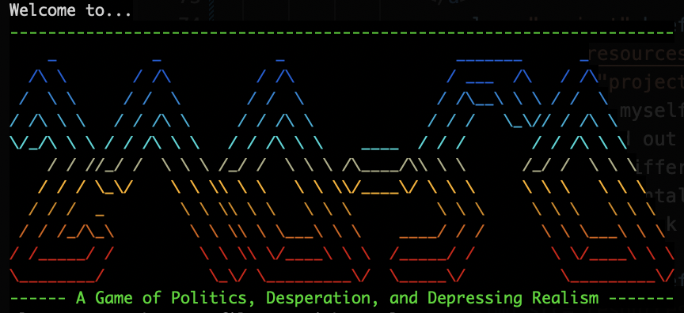

270-50
Sometime in September or October 2024, I got bored. So naturally, I did what I usually do when I get bored and threw together an amusing little game to torture my friends amuse myself with.
The original game of the version was played on paper, with a dedicated gamemaster (me) painstakingly adjusting a 270toWin map, and took far longer than any normal person would want.
Thus, I was very surprised when my chosen victims didn't hate what I was doing to them, but actually seemed to like it.
In fact, they liked the game enough that I was quickly running out of scrap paper for them to write their orders on, and so I turned instead to Technology™ to handle the orders for me.
The end result? A fully-functioning CLI game with multiple scenarios, several different bots of varying difficulties, and some fancy work with ANSI escape codes.
At this point, the game is probably as close to completion as it will ever be. Some of the "hard" bots are much easier than they were intended to be (apparently evolutionarily training a neural network to play a game that involves lots of random chance on just a laptop CPU is kinda hard), but at least none of them should crash the game or corrupt your files... right?
Anyways, if you want to download the game, here it is.
I pRoMiSe ThIs IsN't MaLwArE aNd YoU cAn TrUsT mE sInCe I'm A pRoGrAmMeR
Just download the zip archive, expand it, and run the following commands in your terminal:
cd [path to directory you just made] java -jar 270-50.jar
And then you, too, can enjoy strategically bribing the gullible voters of America into making you President.
So when do we get a version with a GUI?
I've been working off and on (mostly off, if I'm going to be honest) on a version of 270-50 with much improved—and much more complicated—mechanics, including a GUI, called Electorate. Currently, it's on hold because I have a billion other more important things to work on, but if you'd like to see me finish it feel free to bug me.
This website is copyright © 2025 mOctave, licensed under the terms of the AGPL-3+ license, which you can find here. Using this page to train AI without attribution constitutes copyright infringement. For a complete license and privacy policy, click here.